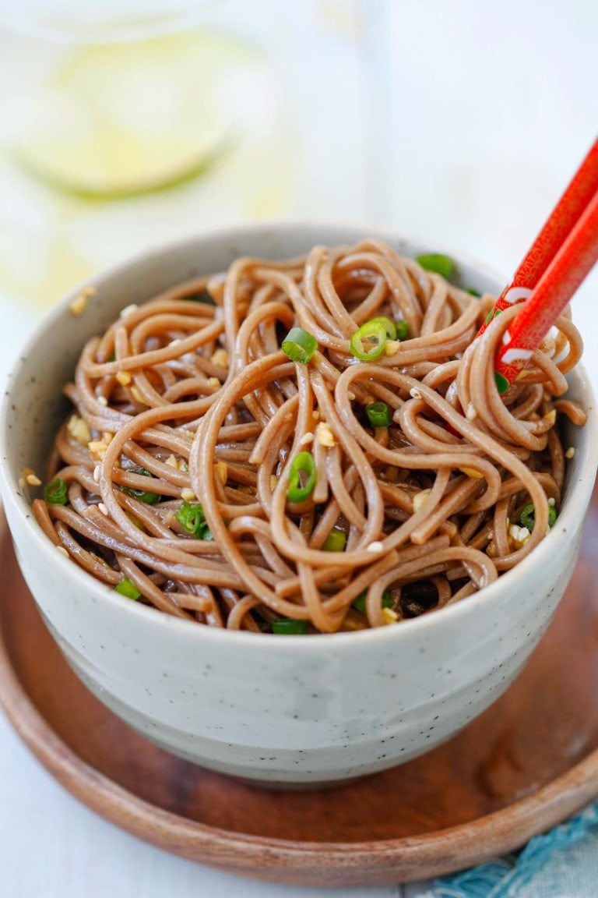

GINGER SOY SOBA

My friend Simply Reem is famous for her ginger soy soba noodle. Her soba noodles with sweet ginger scallion sauce is one of the most pinned noodle pictures on Pinterest, and that says a lot about the recipe.
When I told her to fill in for me and guest post on Rasa Malaysia while I am traveling overseas, I suggested to share her famous ginger soy soba noodles with Rasa Malaysia readers and she happily accepted it.
This amazing tasting noodles are so easy to make, healthy, and takes only 15 minutes to make. The only thing you need to cook is the soba noodles, which takes about 10 minutes in hot boiling water.
The rest is about tossing the noodles with the sauce. I love the sweet ginger sauce with soy sauce, ginger, sesame oil and honey as the key ingredients.
The noodles are savory, with a tint of sweetness and the gingery nuance in every bite. So delicious!
Ingredients:
- 2 oz. (56 g) soba noodles
- salt and pepper as per taste
- 1 teaspoon sesame seeds, lightly toasted
- chopped scallion, for garnishing
Sweet ginger sauce:
- 2 teaspoons soy sauce
- 1/2 teaspoon ginger, minced
- 2 teaspoons sesame oil
- 1/2 teaspoon chili oil
- 1/2 teaspoon rice wine, vinegar
- 2 teaspoons honey
- salt and pepper as needed
Steps:
- Mix all the ingredients for the Sweet Ginger Sauce in the bowl. Set aside.
- Boil the soba noodles per the instruction on the package. Drain well with cold water.
- Add the sauce, sesame seeds and toss the noodles well. Garnish with the chopped scallion and serve immediately.
BON APPETIT!